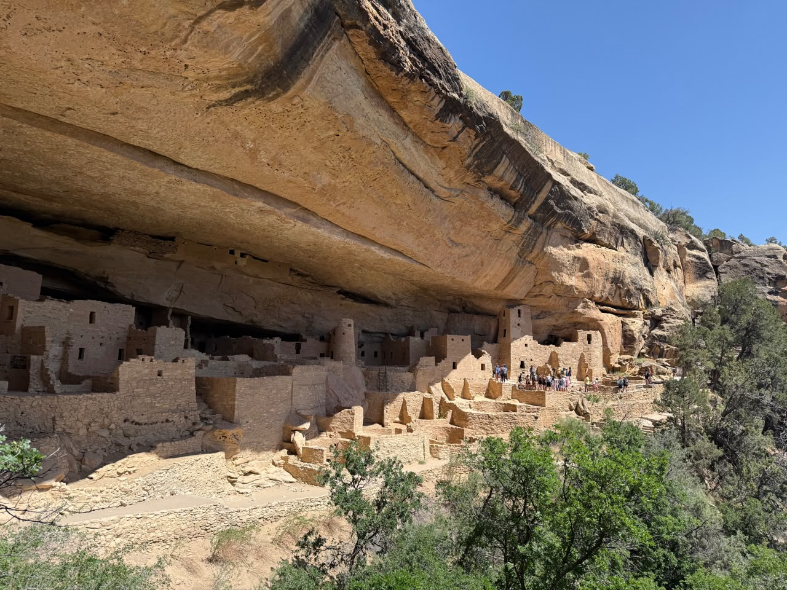
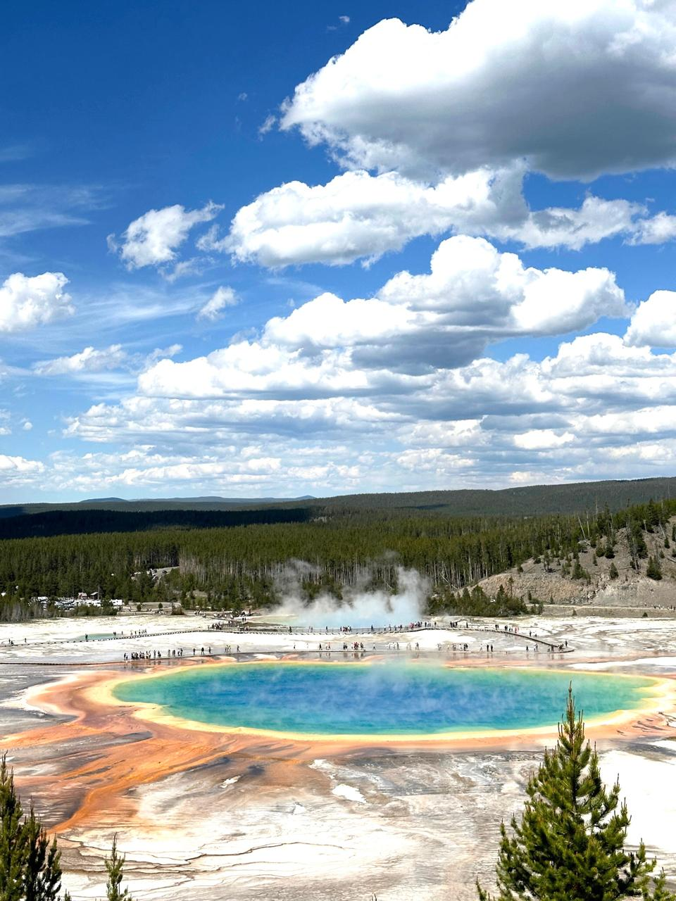

May 2025
Kafka Transactions
A wire-protocol-level explanation of how Kafka coordinates transactional producers, fences old producer epochs, and turns commit or abort decisions into markers that consumers can reason about.
read the pieceSoftware engineer at Oracle working on backend systems, databases, streaming, vector search, and AI agents.
Curious about systems, both technical and natural. I spend my time working on backend and AI systems, exploring how things fit and scale. I enjoy reading, wandering and learning how things work.
Outside of tech, I'm exploring sustainable ventures on my family's tea estate.
May 2025
A wire-protocol-level explanation of how Kafka coordinates transactional producers, fences old producer epochs, and turns commit or abort decisions into markers that consumers can reason about.
read the piece
add photo
add photo